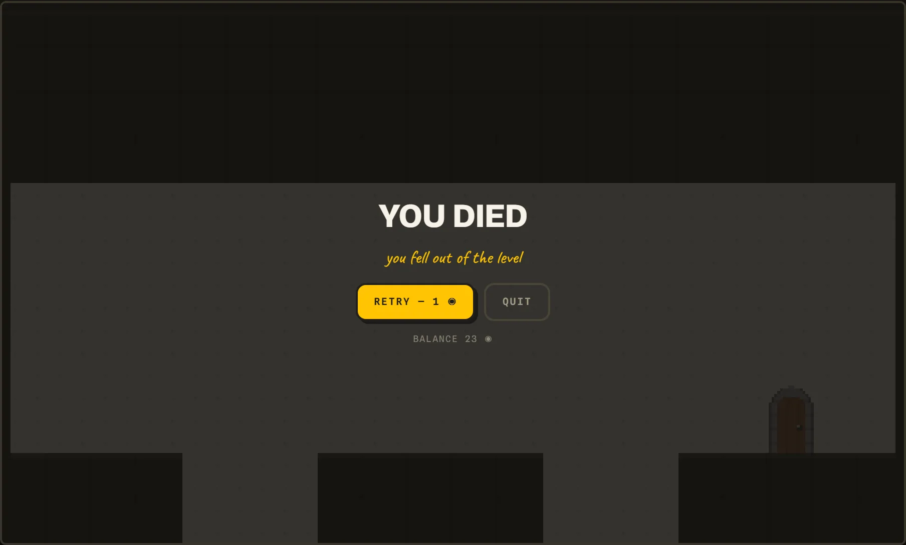
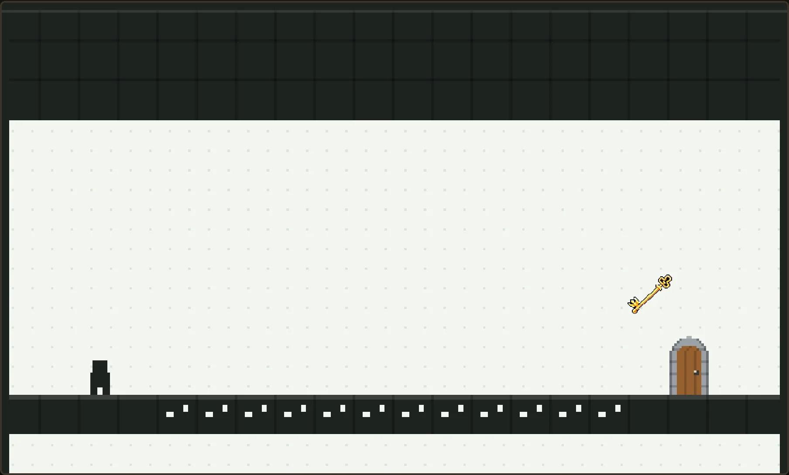
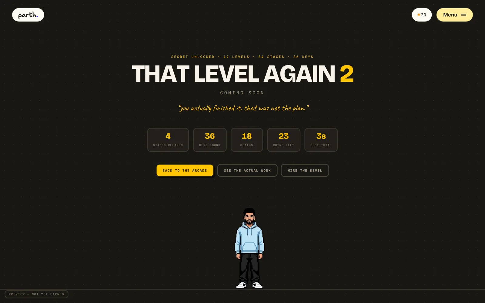
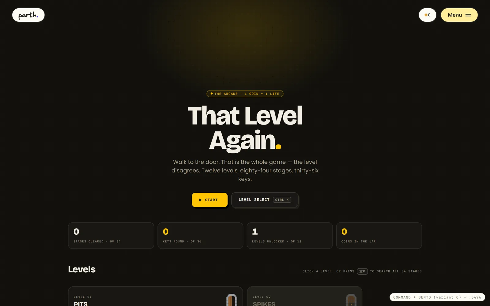
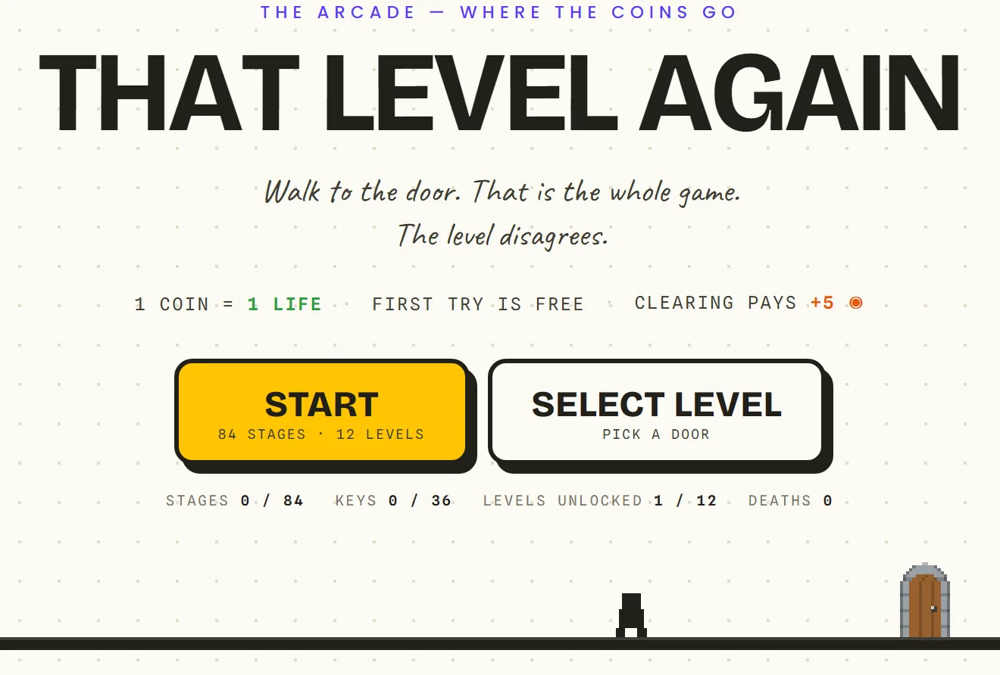
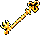
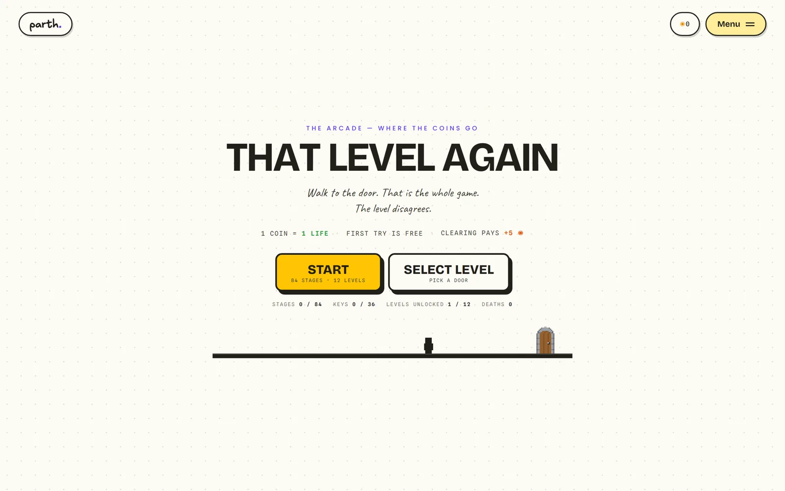
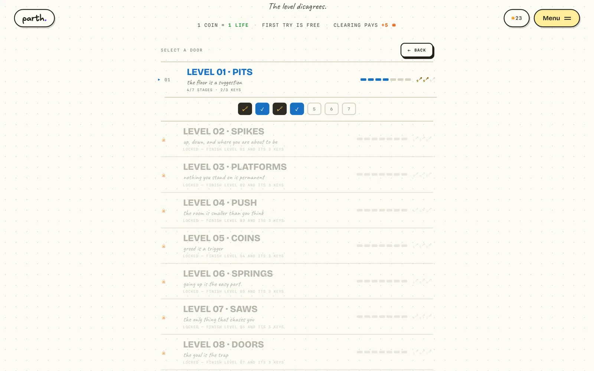
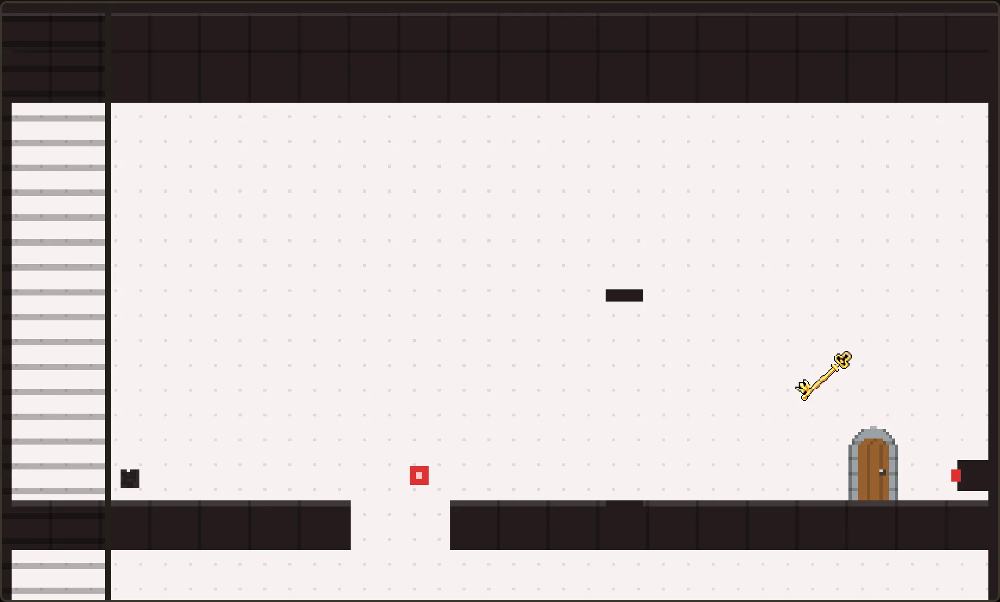

This site pays visitors in coins for exploring. Coins for what? I built the answer: a troll platformer where 1 coin = 1 life — and every one of its 84 stages is machine-proven beatable.
A pixel platformer living inside this portfolio, funded by its own coin wallet. Twelve levels, eighty-four single-screen stages, thirty-six hidden keys. The floor lies, the exit runs away, gravity is a preference. Built framework-free in a 41.6 KB deterministic engine, balanced so a broke player is never dead-ended, and shipped behind 275+ automated checks — including a search bot that plays the real engine and proves every stage has a solution.
The portfolio already had a coin economy — visitors earn ◉ for poking around — but nothing to spend it on. Dead currency is worse than no currency. The brief I set myself: make the coins matter with an arcade where 1 coin = 1 life. The catch: a troll platformer kills you 3–8 times per stage by design, but a typical visitor arrives holding 10–40 coins. A literal 1:1 economy is a paywall wearing a game costume.
84 hand-authored stages is 84 chances to ship a level that cannot actually be finished — and in a game about dying, a broken stage looks identical to a hard one. Nobody files a bug report for a level they assume they're just bad at. The failure mode is silent, and it costs the player real coins.
“In a game built on lying to the player, the one thing that can never lie is the level itself — so I made solvability a compile step.”
a search bot plays the real engine, and refuses the build if any stage — or any key — is unreachable
Studied Level Devil the way you would a rival product: a 36-trap taxonomy grouped by which promise each trap breaks — the floor lies, the goal lies, the rules change. The design rule that fell out: every surprise must teach; a trap that kills you twice the same way is a bug.
Blind-run death rates (3–8 per stage) versus real wallet sizes (10–40 ◉) said a strict 1:1 economy stops most visitors inside two levels. So deaths cost 1 ◉ but clearing pays +5, opener stages retry free, and a zero-coin player gets a 6-second pity retry — the meter reads as tension, never as a toll booth.
Fixed 60 Hz timestep, zero dependencies, and a simulation with no randomness and no wall-clock — same inputs, same result, every time. That is not purism; determinism is what makes a level provable.
A beam-search solver plays the actual engine — not a model of it — and must reach the door in every stage before anything ships. It caught two of my three example levels as geometrically impossible, and one engine line that silently made all five spring stages unwinnable.
The solver passed level 6-4 through a line no person would find while the intended route was impossible — the player caught what the bot could not. Rule kept from that day: machine-proof solvability, human-check feel.
Seven Playwright suites — economy paths, progression locks, page audit, whole-site gate — plus a production smoke test that plays stage one with a real keyboard on the live site: dies, retries free, clears, collects the bounty.




variant C — a dark, shadcn-style take with a ⌘K palette; polished, rejected for sounding like someone else’s site ✏

the shipped title screen — two buttons, the coin rule in plain text, and the whole game one tap away ✏

win 01The coin loop closed: earn ◉ anywhere on the site, spend it in the arcade, win it back by playing well. First try always free, so an empty wallet is never a locked door.
A level is seven stages; three hide golden keys, never in neighbouring stages. All seven cleared AND all three keys unlocks the next level — so keys are a reason to return, not decoration.
Clearing all 84 stages with all 36 keys opens /reward — my walk-cycle avatar strolls in and reveals THAT LEVEL AGAIN 2. No menu links it, the sitemap omits it, and a CSS specificity bug that briefly leaked it to everyone became a fix and a lesson.
Solvability as a compile step, key placement proven by replaying the winning path, 275+ checks green before deploy. The claim “every level is beatable” is not marketing copy — it is a test result.


